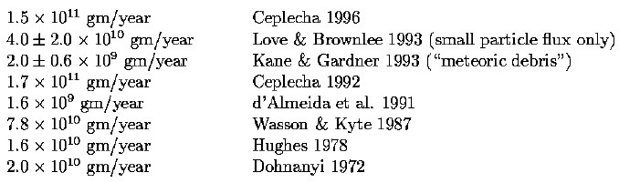
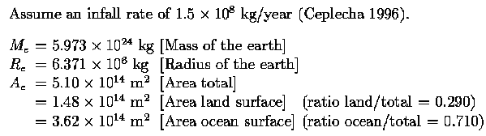
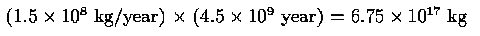
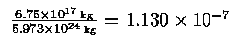
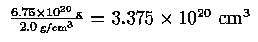
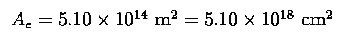

Einführung
|
Motiviert durch das Beobachten, wie dieselben alten Argumente endlos auf talk.origins wiederholt werden, beschloss ich, mich so gut es ging mit dem aktuellen Stand des Verständnisses bezüglich des extraterrestrischen Staubniedergangs auf der Erde vertraut zu machen. Es wird argumentiert, dass sowohl die Erde als auch der Mond mit einer großen Schicht Weltraumstaub bedeckt sein sollten, wenn die Erde so alt wäre, wie die Standardmodelle es implizieren. Diese Mini-FAQ wird die Diskussion von Chris Stassen in seiner "Age of the Earth"-talk.origins-FAQ-Datei präsentieren und dann einen Update aus der aktuellen Literatur liefern. Ich mache keinen Anspruch darauf, eine erschöpfende Suche durchgeführt zu haben, aber ich denke, ich habe eine angemessen gründliche Suche durchgeführt, sodass meine Ergebnisse hier sicherlich repräsentativ für den aktuellen Wissensstand in diesem Bereich sind. Hoffentlich wird dies dazu beitragen, das verstaubte Weltraumstaub-Argument ein für allemal zum Schweigen zu bringen.
"Das Alter der Erde" von Chris Stassen
Das Folgende ist ein Auszug aus der talk.origins FAQ-Datei "The Age of the Earth" von Chris Stassen. Sein Ziel ist das Argument des meteoritischen Staubes, wie es auf den Mond angewendet wird. Da jedoch die von den Junge-Erde-Kreationisten verwendeten Messungen irdisch sind, ist das Argument ebenso auf die Erde anwendbar (und wurde von Junge-Erde-Kreationisten auch auf die Erde angewendet). Ich füge hier den vollständigen Text des Abschnitts 3 des ersten Teils der FAQ, "How Old is the Earth and How Do We Know?", ein. Ich füge dies ein, um das Argument für den Leser in den richtigen Kontext zu setzen, bevor ich zu einer Beschreibung der aktuellen Beobachtungen und Daten übergehe. Ich werde auch alle von Stassen in diesem Abschnitt zitierten Referenzen wiedergeben.
[Anfang des zitierten Materials]
3. Ansammlung von Meteoritenstaub auf dem Mond
Dieses Argument: Eine einzelne Messung der Rate des meteoritischen Staubzuflusses zur Erde ergab einen Wert in der Millionen-Tonnen-Rechnung pro Jahr. Während dies im Vergleich zu den Erosionsprozessen auf der Erde (ungefähr eine Schuhkartonfülle Staub pro Hektar pro Jahr) vernachlässigbar ist, gibt es auf dem Mond keine solchen Prozesse. Der Mond muss eine ähnliche Menge Staub erhalten (vielleicht 25% so viel pro Flächeneinheit aufgrund seiner geringeren Schwerkraft), und es sollte eine sehr dicke Staubschicht (ungefähr hundert Fuß dick) vorhanden sein, wenn der Mond mehrere Milliarden Jahre alt ist.
Morris sagt bezüglich der Staubzufuhr-Rate:
"Die besseren Messungen wurden von Hans Pettersson durchgeführt, der den Wert von 14 Millionen Tonnen pro Jahr (1) ermittelte." (Morris 1974, S. 152) [Hervorhebung hinzugefügt]
Pettersson stand auf einem Berggipfel und sammelte dort Staub mit einem Gerät, das für die Messung von Smogwerten bestimmt war. Er veröffentlichte Berechnungen, die die Menge an Nickel messen, das er sammelte, annahm, dass Nickel nur in meteoritischem Staub vorhanden sei, und annahm, dass ein bestimmter Prozentsatz des meteoritischen Staubes Nickel sei, um seine endgültigen Zahlen zu erhalten (diese erste Annahme war falsch und führte dazu, dass seine veröffentlichten Zahlen eine enorme Überschätzung darstellten).
Petterssons Berechnung ergab eine Zahl von etwa 15 Millionen Tonnen pro Jahr. Er glaubte, dass diese Schätzung eine Überschätzung sei, und gab in der Arbeit an, dass 5 Millionen Tonnen pro Jahr eine viel wahrscheinlichere Zahl sei.
Viel genauere Messungen waren verfügbar, aus Satellitendurchdrungsdaten (keine Möglichkeit irdischer Kontamination), zum Zeitpunkt, als Morris Scientific Creationism veröffentlichte. Diese genaueren Messungen ergeben den Wert von etwa 18.000 bis 25.000 Tonnen pro Jahr. Diese Messungen stimmen mit den Werten überein, die in Sedimenten auf der Erde gefangener meteoritischer Staub aufweisen. (Das heißt, sie werden durch eine unabhängige Kreuzprüfung bestätigt.)
Morris wählt veraltete Daten mit bekannten Problemen aus und nennt sie die "beste" verfügbare Messung. Seine Berechnungen basieren auf einer Zahl, die fast drei Größenordnungen zu hoch ist. Mit den richtigen Werten ist die erwartete Tiefe des meteoritischen Staubes auf dem Mond weniger als ein Fuß.
Für weitere Informationen siehe (Dalrymple 1984, S. 108-111) oder (Strahler 1987, S. 143-144).
Es gibt eine jüngste kreationistische Facharbeit zu diesem Thema, die zugibt, dass die Tiefe des Staubes auf dem Mond mit dem Mainstream-Alter und der Geschichte des Sonnensystems übereinstimmt (Snelling und Rush 1993). Ihr Abstract schließt mit:
"Es scheint also, dass die Menge an meteoritischem Staub und Meteoriten-Trümmern im Mondregolith und der oberflächlichen Staubschicht, selbst wenn man die postulierte frühe intensive Bombardierung berücksichtigt, nicht den evolutionistischen Mehrmilliarden-Jahre-Zeitskala widerspricht (während sie sie nicht beweist). Leider haben versuchte Gegenreaktionen durch Kreationisten bisher gescheitert aufgrund von falschen Argumenten oder fehlerhaften Berechnungen. Daher sollten Kreationisten, bis neue Beweise vorliegen, nicht weiter den Staub auf dem Mond als Beweis gegen ein hohes Alter des Mondes und des Sonnensystems verwenden."
Selbst wenn die Kreationisten selbst dieses Argument widerlegt haben, (und Widerlegungen aus der Mainstream-Gemeinschaft existieren seit mindestens einem Jahrzehnt länger als das), wird das "Mondstaub"-Argument weiterhin in ihrer "populären" Literatur verbreitet und erscheint regelmäßig in talk.origins:
(Baker 1976, S. 25)
(Brown 1989, S. 17 und 53)
(Jackson 1989, S. 40-41)
(Jansma 1985, S. 62-63)
(Whitcomb und Morris 1961, S. 379-380)
(Wysong 1976, S. 166-168)[Ende des zitierten Materials]
Diese Referenzen finden Sie in meinem Referenzbereich weiter unten.
Update: Aktuelle Beobachtungen
Dohnanysis Rezensionspapier von 1972 scheint den Beginn dessen zu markieren, was ich die „moderne Ära" der Bestimmung des Flusses von extraterrestrischem Staub auf der Erde und dem Mond nennen werde. Dohnanys Fluss wird von Dalrymple, 1991, zitiert, und sein Formalismus wird in Yamakoshi, 1994, wiederholt. Diese Tabelle repräsentiert eine Vielzahl disparater Techniken, was dazu führt, dass man sich sicher sein kann, dass die reale Zahl den berichteten Werten sehr nahe kommt. Dohnanyi berechnete den Zufluss von extraterrestrischem Material basierend auf seinem Modell für die Dichte von interplanetarem Staub in der Nähe der Erde. Kane & Gardner nutzten bodengestützte Lidar-Beobachtungen von mesosphärischen Metallen, Love & Brownlee nutzten den beobachteten Impaktfluss auf die Long Duration Exposure Facility (LDEF), und Ceplecha verwendet eine Kombination aus Modell und Beobachtung. Dohnanyi zitiert zudem einen Wert von Barker & Anders, 1968, basierend auf isotopischen Häufigkeitsverhältnissen in Meeresbodensedimenten, die 6,12 × 1010 g/Jahr schätzten, mit einer Obergrenze von 1,48 × 1011 g/Jahr, was sich als eine schöne Übereinstimmung mit Ceplechas 1996-Korrektur seiner eigenen 1992-Ergebnisse herausstellt. Die Konvergenz der Antworten aus Modell, Lidar, Meeresbodensedimenten und anderen Methoden ist höchst anregend.
| TABELLE 1 Meldete Flussraten von extraterrestrischem Staub auf die Erde, mit Referenzen, normalisiert auf g/Jahr über die gesamte Erde. |
 |
Folgen für die Erde
Hier möchte ich die Auswirkungen der oben angegebenen Staubniederschlagsraten auf die Erde untersuchen. Ich verwende den von Ceplecha, 1996, angegebenen Wert von 1,5 × 1011 Gramm/Jahr als angenommene Niederschlagsrate. Sein Wert aus 1992 ist etwas höher, aber er korrigierte sich 1996 basierend auf Daten, die 1992 noch nicht verfügbar waren.

Berechnen Sie den gesamten Staubfall in 4,5 Milliarden Jahren ...

Gesamtstaubfall als Bruchteil der aktuellen Erdmasse ...

[Mit anderen Worten, die Gesamtmasse der Erde nimmt über die gesamten 4,5 Milliarden Jahre um ein Zehntel eines Millionstel, also um ein Hunderttausendstel Prozent zu]
Berechnen Sie das Volumen, das der insgesamt über 4,5 Milliarden Jahre gefallene Staub einnimmt ... Nehmen Sie eine Staubdichte von 2,0 g/cm3 an (Love, Joswiak & Brownlee, 1994)

Berechnen Sie die Dicke einer Schicht mit gleichem Volumen auf der Oberfläche der Erde ...

Wenn eine ebene Fläche dieser Größe mit einer Dicke von einem Meter (100 cm) bedeckt wäre, würde das Volumen 5,10 × 1020 cm3 betragen, was größer ist als das Volumen aller außerirdischen Staubpartikel. Das Verhältnis 3,375/5,10 = 0,6618 ergibt die wahre Höhe der Schicht in Metern, 66,18 cm.
Wir berechnen eine Schicht, die nur 66,18 cm dick ist, nach 4,5 Milliarden Jahren, aber dies ist eindeutig eine obere Grenze für die tatsächliche Dicke. Zum einen ist die Erde nicht flach, und die Krümmung an der Erdoberfläche würde dazu führen, dass die tatsächliche Schichtdicke kleiner ist. Darüber hinaus haben wir die Tatsache ignoriert, dass der Staub hochgradig porös ist und sehr wenig mechanische Festigkeit aufweist. Wenn Sie tatsächlich versuchen würden, ihn 66 cm hoch aufzuhäufen, würde er aufgrund seines eigenen Gewichts erheblich komprimieren.
Kommentare
[überarbeitet am 28. Januar 1997]
Obwohl Stassen in seinem FAQ darauf hinweist, dass selbst viele Schöpferwissenschaftler dieses Argument aufgegeben haben, ist es immer noch beliebt. Es bleibt nicht nur auf talk.origins beliebt, sondern auch bei der Creation Research Society (CRS). Die CRS hat angekündigt, ein auf Amateurfunk basiertes Projekt zu starten, um Meteor-Eintritte in die obere Atmosphäre zu untersuchen, und zwar mit dem ausdrücklichen Ziel, das Argument der außerirdischen Staubpartikel wiederzubeleben.
Radio- oder Radar-Remote-Sensing-Techniken sind für die Erforschung von Meteoriten geeignet, da sich Radiowellen an den ionisierten Meteoriten-Spuren reflektieren. Die hier zitierte wissenschaftliche Forschung basiert jedoch auf In-situ-Messungen, entweder von Staub in der Stratosphäre oder von Impaktmerkmalen auf der Long Duration Exposure Facility, zusätzlich zu Lidar-Beobachtungen, die garantiert deutlich empfindlicher sind als jedes Radioausrüstung, die das CRS wahrscheinlich installieren wird. Es scheint, als wäre dies ein Projekt, das zum Scheitern verurteilt ist, aber rechnen Sie das CRS noch nicht aus. Erwarten Sie, dass dieses Argument seinen regelmäßigen Lauf auf talk.origins fortsetzt und bei und wenn das CRS-Projekt tatsächlich beginnt, an Häufigkeit der Erscheinung zunimmt.
[Herausgeberanmerkung (12. Januar 2006): Einige junge-Erde-Kreationisten haben das Argument mit Meteoritenstaub aufgegeben. Siehe beispielsweise: Das Argument mit Mondstaub ist nicht mehr nützlich.]
Quellenangaben
Die Referenzliste enthält Einträge für alle zitierten Werke sowie weitere Referenzen, die ich für das Thema als angemessen erachte, auch wenn ich sie nicht direkt zitiert habe. Betrachten Sie sie als Leselisten ebenso wie als Referenzliste. Alle Referenzen aus Stassens zitiertem Abschnitt sind ebenfalls enthalten.
[Talk.origins FAQ Archiv Startseite]
http://www.talkorigins.org/
[Talk.origins FAQ "Das Alter der Erde: Wie wissen wir das?"
von Chris Stassen]
http://www.talkorigins.org/faqs/faq-age-of-earth.html
["Das Alter der Erde: Debatte zwischen Chris Stassen und Bob
Bales" von Chris Stassen]
http://www.talkorigins.org/faqs/debate-age-of-earth.html
[David Brownlees Homepage]
http://www.astro.washington.edu/brownlee
d'Almeida, Guillaume A.; Peter Koepke & Eric P. Shettle "Atmosphärische Aerosole - Globale Klimatologie und Strahlungscharakteristika" Deepak publishing, 1991 QC882.42-D148
Baker, Sylvia, 1976. Evolution: Bone of Contention, New Jersey, Evangelical Press. 35 pp. ISBN 0-85234-226-8
Brown, Walter T., Jr., 1989. In The Beginning..., Arizona, Center for Scientific Creation. 122 pp.
Ceplecha, Zdenek "Einfluss von interplanetaren Körpern auf die Erde" Astronomy and Astrophysics 263: 361-366 (1992)
Ceplecha, Zdenek "Luminöse Effizienz basierend auf fotografischen Beobachtungen des Lost-City Feuerballs und Implikationen für den Einfluss von interplanetaren Körpern auf die Erde" Astronomy and Astrophysics 311(1): 329-332 (Juli 1996)
Dalrymple, G. Brent "Das Alter der Erde" Stanford University Press, 1991 ISBN 0-8047-2331-1 [Siehe Kapitel 6 - "Meteoriten: Besucher aus dem Weltraum"]
Dalrymple, G. Brent, 1984. "Wie alt ist die Erde? Eine Antwort auf 'Wissenschaftlicher Kreationismus'", in Proceedings of the 63rd Annual Meeting of the Pacific Division, AAAS Volume 1, Part 3, California, AAAS. pp. 66-131. http://www.talkorigins.org/faqs/dalrymple/how_old_earth.html
Dohnanyi, J.S. "Interplanetare Objekte im Überblick: Statistiken ihrer Massen und Dynamik" Icarus 17: 1-48 (1972) [Icarus Einladungsreferat, 215 Referenzen]
Farley, K.A. & R.B. Patterson "Eine 100-Ky-Jahresperiodizität im Fluss von extraterrestrischem He-3 zum Meeresboden" Nature 378(6557): 600-603 (7. Dezember 1995) [Die Autoren untersuchen He-3 Vorkommen in Tiefseebodensedimenten. Die Annahme, dass He-3 extraterrestrisch ist, basiert auf ihren eigenen und anderen zuvor zitierten Studien]
Hughes, 1978 siehe "Kosmischer Staub", J.A.M. McDonnell ed., Wiley 1978, pp 148-157
Jackson, Wayne, 1989. Creation, Evolution, and the Age of the Earth, California, Courier Publications. 57 pp.
Jansma, Sidney J., Jr., 1985. Six Days, Michigan, Jansma.
Kane, Timothy J. & Chester S. Gardner "Lidar-Beobachtungen der meteorischen Ablagerung von Mesosphärenmetallen" Science 259: 1297-1300 (26. Februar 1993)
Levasseur-Regourd, A.C. und H. Hasegawa (Herausgeber) "Ursprung und Evolution von interplanetarem Staub" [Universite paris VI, Aeronomie CNRS, Verries-le-Buisson, Frankreich] [Osaka Sangyo University, Osaka, Japan] Kluwer Academic Publishers, 1991; (Astrophysics and Space Science Library) Proceedings of the126th colloquium of the International Astronomical Union, held in Kyoto, Japan, August 27-30, 1990 ISBN 0-7923-1365-8 QB791.I563 [.I62 in JPL library]
Love, S.G. & D.E. Brownlee "Eine direkte Messung der terrestrischen Massenzuwachsrate von kosmischem Staub" Science 262: 550-553 (22. Oktober 1993)
Love, S.G.; D.J. Joswiak & D.E. Brownlee "Dichten von Stratosphärenmeteoriten" Icarus 111(1): 227-236 (September 1994)
Morris, Henry, 1974. Scientific Creationism, California, Creation- Life Publishers. 217 pp. ISBN 0-89051-001-6
Reach, W.T. "Über den Ursprung von interplanetarem Staub innerhalb der aufgezeichneten Geschichte" Meteoritics 27(4): 353-360 (September 1992) [Der Autor sucht in alten chinesischen Aufzeichnungen nach Anzeichen für ungewöhnliche Kometen, Asteroiden oder helle Objekte, die eine wichtige Quelle für interplanetaren Staub sein könnten]
Strahler, Arthur N., 1987. Science and Earth History: The Creation/ Evolution Controversy, New York, Prometheus. 552 pp. ISBN 0-87975-414-1
Taylor, A.D.; W.J. Baggaley & D.I. Steel "Die Entdeckung von interstellarem Staub, der die Erdatmosphäre betritt" Nature 380(6572): 323-325 (28. März 1996) [Die Autoren berichten über die Radarerkennung von Staub, der als interstellarer Ursprung vermutet wird aufgrund seiner besonderen Geschwindigkeit, ähnlich wie es vom Ulysses-Weltraumfahrzeug getan wurde, als es interstellaren Staub in der Nähe von Jupiter identifizierte]
Wasson & Kyte, 1987 Geophysical Research Letters, 14:779, 1987
Whitcomb, John C., und Henry M. Morris, 1961. The Genesis Flood, New Jersey, Presbyterian and Reformed Publishing Company. 518 pp. ISBN 0-87552-338-2
Wysong, R. L., 1976. The Creation-Evolution Controversy, Michigan, Inquiry Press. 455 pp. ISBN 0-918112-01-X
Yamakoshi, Kazuo "Extraterrestrischer Staub" (Untertitel: "Laboratorienstudien zu interplanetarem Staub") [Institut für Kosmische Strahlenforschung, Universität Tokio, Tokio, Japan] Kluwer Academic Publishers, 1994; (Astrophysics and Space Science Library) [veröffentlicht in Zusammenarbeit mit Kluwer durch Terra Scientific Publications, Tokio] ISBN 0-7923-2294-0 QB791.Y36 [Yamakoshi verwendet dasselbe Modell, das von Dohnanyi (1972) entwickelt wurde, um die räumliche Verteilung von interplanetarem Staub zu beschreiben. Das Modell basiert teilweise auf Beobachtungen des Zodiakallichts.]